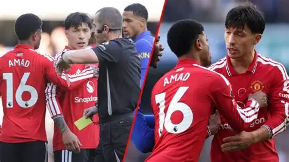

IAN HERBERT: Martinez meltdown exposes Man United's collapse as pressure mounts on Carrick - and Chelsea boss Alonso still has questions to answer
Lisandro Martinez sent off as Chelsea beat Man Utd 2-0 - United now nine games without a win and Carrick's future hangs by a thread.

Chelsea's 2-0 win over Manchester United at Stamford Bridge was overshadowed by Lisandro Martinez's four-minute meltdown.
Chelsea 2-0 Man Utd - Full Detail + Martinez Red + Carrick Future
Michael Carrick refused to be drawn on Lisandro Martinez's dismissal after Manchester United slumped to a 2-0 defeat at Chelsea.
United shaded an open first half but fell behind to Morgan Rogers' superb solo effort in the 50th minute, with Martinez doing nothing to stop him.
"It's crazy! It's unacceptable. That is absolutely crazy. He's let everybody down," said TNT Sports co-commentator Ally McCoist. "He's let his manager down. They're in the game at 1-0."
Matters worsened in the 63rd minute. Martinez, already booked in the 59th minute for a foul on Rogers, inexplicably raised his arm into Wesley Fofana's face while defending a corner. Referee Peter Bankes was sent to the monitor after VAR spotted the foul.
After review, Bankes awarded a penalty and produced a second yellow. Cole Palmer converted in the 64th minute - his 5th goal in 8 career games against United - to make it 2-0. Chelsea would later have a third ruled out for offside by the finest of margins.
As Martinez walked to the tunnel, there was no acknowledgement between him and Carrick. Asked after the game if he felt let down, Carrick said simply: "No. I've not looked at it to be honest."
It is the latest chapter in a tense month for Martinez, who was forced to apologize earlier in October after an explosive interview calling out the club's hierarchy following defeat to Atletico Madrid in the Champions League.
United are now winless in nine in all competitions and sit 16th in the Premier League, one point above the drop zone.
What happens next for Carrick and Alonso?
Carrick was told on Monday he would keep his job for the Chelsea game despite links to Julian Nagelsmann, Eddie Howe and Antonio Conte. The Athletic reported the board delayed a decision because "the best ones won't come". He insists he will be in charge for Tuesday's Champions League clash with Roma and then Aston Villa before the international break.
"We have spoken at half-time that we're going to win this game with the ball," said Xabi Alonso, whose side moved to 4th on 16 points. Chelsea had lost 2-0 at home to Tottenham last week and exited the Carabao Cup on penalties at Liverpool on Wednesday.
Alonso hailed 19-year-old Estevao Willian after his first Premier League start: "Estevao did really well. I am happy for him. He deserved this chance." The Brazilian had been at the centre of loan speculation after playing just 172 minutes before Saturday.
Chelsea remain without Joao Pedro, Reece James and new signing Maxence Lacroix, who will miss a few weeks with a hamstring injury.
Carrick on values: Tuesday will decide if INEOS still believe in continuity or finally pull the trigger. Eight permanent managers since Sir Alex Ferguson is already one too many.